插件开发指南
插件开发指南，通过一个简单例子，教你如何开发插件。
简单例子
下载插件开发配置插件
登录工具，到市场-工具插件 下载插件开发配置插件。
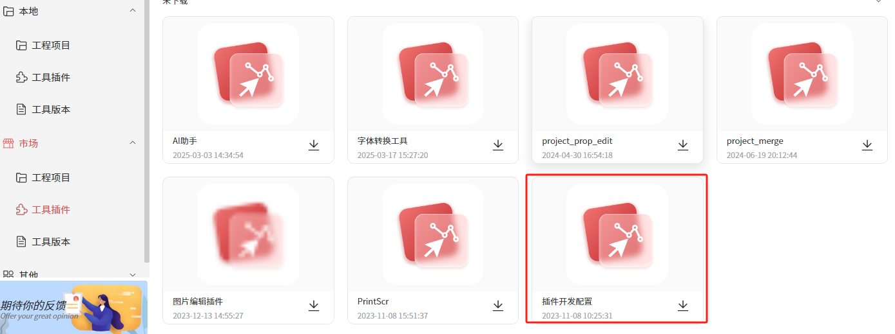
配置信息
下载完之后，到本地-工具插件 运行对应的插件。 配置好对应的插件目录、插件名、入口文件等信息。然后点击提交
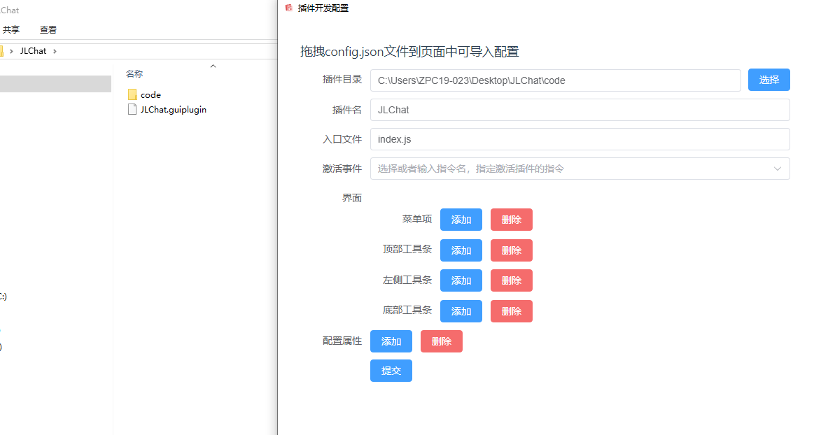
写入代码
配置好之后，打开对应目录，在code目录下新建index.js，
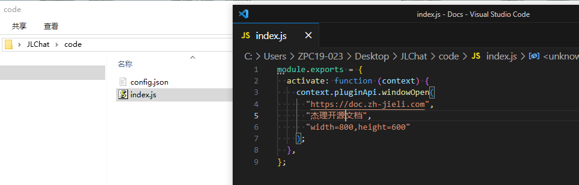
然后可以在index.js中写入代码。module.exports = {
activate: function (context) {
context.pluginApi.windowOpen(
"https://doc.zh-jieli.com",
"杰理开源文档",
"width=800,height=600"
);
},
};
再次打包成 guiplugin
写好代码后，再次提交打包
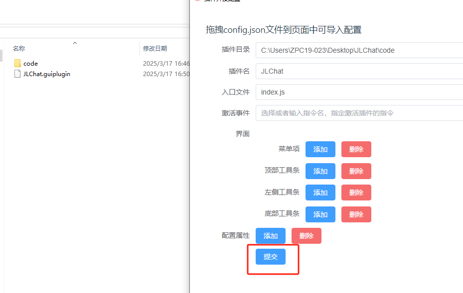
拖到工具中使用
将生成好的JLChat.guiplugin拖到工具中使用。
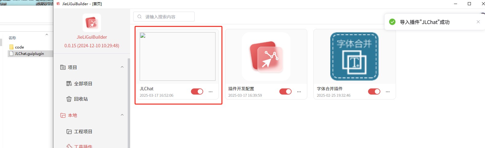
打开插件
点击打开插件，可以看到插件打开了杰理开源文档。
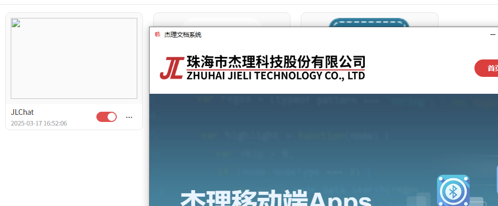
打开本地文件
需要将index.js代码修改如下：
const path = require('path')
module.exports = {
activate: function (context) {
context.pluginApi.windowOpen(
path.join(process.cwd(), "./index.html"),
"插件开发",
"width=800,height=600"
);
},
};
然后在当前目录下新增 index.html 文件，在里面写上对应的html内容。
<!DOCTYPE html>
<html lang="en">
<head>
<meta charset="UTF-8">
<meta name="viewport" content="width=device-width, initial-scale=1.0">
<title>JLChat</title>
</head>
<body>
<h3>Hello JLChat!</h3>
<script>
var path = electronApi.getPublishPath(); //壳接口（类似electron接口）
console.log("工具目录: " + path);
</script>
</body>
</html>
复杂插件开发
这里使用Vue项目开发插件。并通过electronApi接口调用工具原生接口。
初始化项目
按照普通的vue项目初始化即可。然后在上一步中的index.js中修改如下：
const path = require('path')
module.exports = {
activate: function (context) {
context.pluginApi.windowOpen(
path.join("http://127.0.0.1:8081/"),
"插件开发",
"width=800,height=600"
);
},
};
运行插件
这样就可以在插件弹出框里面看到vue项目的内容了。这个是开发模式下的项目
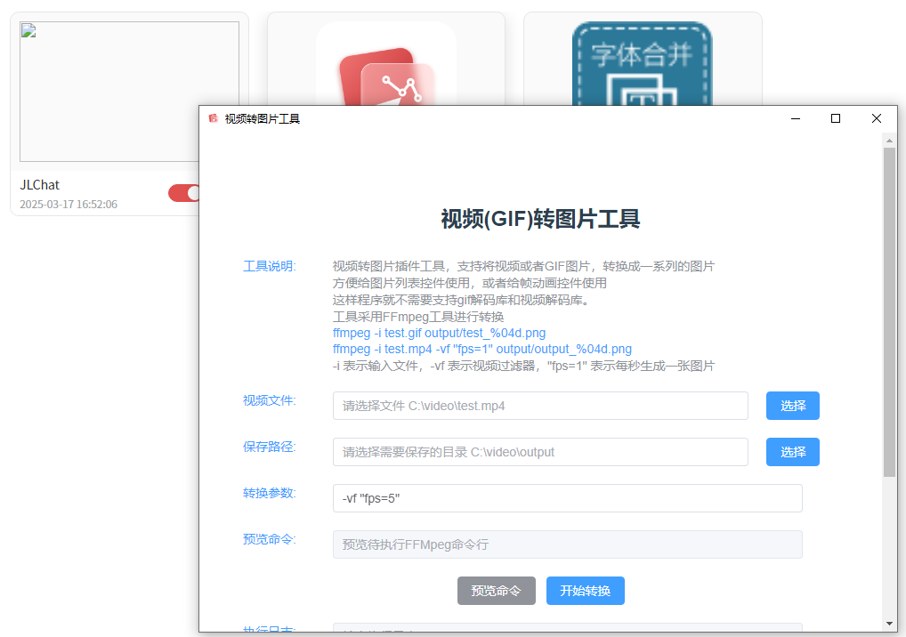
功能开发
新建一个普通的vue工程
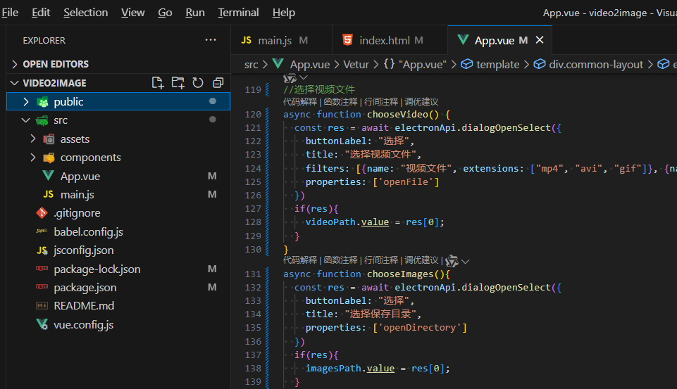
App.vue代码如下
<template>
<div class="common-layout">
<el-container>
<el-header><h1>视频(GIF)转图片工具</h1></el-header>
<el-main>
<el-row :gutter="20">
<el-col :span="4">
<el-text class="" type="primary">FFmpeg文件:</el-text>
</el-col>
<el-col :span="16">
<el-input v-model="ffmpegPath" placeholder="请选择FFmpeg程序 C:\video\ffmpeg.exe"></el-input>
</el-col>
<el-col :span="2">
<el-button type="primary" @click="chooseFFmpeg">选择</el-button>
</el-col>
</el-row>
<el-row :gutter="20">
<el-col :span="4">
<el-text class="" type="primary">视频文件:</el-text>
</el-col>
<el-col :span="16">
<el-input v-model="videoPath" placeholder="请选择文件 C:\video\test.mp4"></el-input>
</el-col>
<el-col :span="2">
<el-button type="primary" @click="chooseVideo">选择</el-button>
</el-col>
</el-row>
<el-row :gutter="20">
<el-col :span="4">
<el-text class="" type="primary">保存路径:</el-text>
</el-col>
<el-col :span="16">
<el-input v-model="imagesPath" placeholder="请选择需要保存的目录 C:\video\output"></el-input>
</el-col>
<el-col :span="2">
<el-button type="primary" @click="chooseImages">选择</el-button>
</el-col>
</el-row>
<el-row :gutter="20">
<el-col :span="4">
<el-text class="" type="primary">转换参数:</el-text>
</el-col>
<el-col :span="18">
<el-input v-model="tranArgs" placeholder="FFMpeg参数"></el-input>
</el-col>
</el-row>
<el-row :gutter="20">
<el-col :span="4">
<el-text class="" type="primary">预览命令:</el-text>
</el-col>
<el-col :span="18">
<el-input type="textarea" :rows="4" v-model="previewCmd" placeholder="预览待执行FFMpeg命令行" disabled></el-input>
</el-col>
</el-row>
<el-row :gutter="20">
<el-col :span="24">
<el-button type="info" @click="preView">预览命令</el-button>
<el-button type="primary" @click="tran" :loading="tranStatus">开始转换</el-button>
</el-col>
</el-row>
<el-row :gutter="20">
<el-col :span="4">
<el-text class="" type="primary">执行日志:</el-text>
</el-col>
<el-col :span="18">
<el-input type="textarea" :rows="10" placeholder="输出执行日志" disabled v-model="logMsg"></el-input>
</el-col>
</el-row>
</el-main>
</el-container>
</div>
</template>
<script setup>
/* eslint-disable */
import { ElNotification } from "element-plus";
import { ref } from "vue";
const videoPath = ref("");
const imagesPath = ref("");
const tranArgs = ref(`-vf "fps=5"`);
const previewCmd = ref("");
const logMsg = ref("");
const tranStatus = ref(false);
const ffmpegPath = ref('"' + electronApi.getPublishPath().replaceAll('\\', '/') + '/tools/environment/external_tool/ffmpeg"');
async function chooseFFmpeg(){
const res = await electronApi.dialogOpenSelect({
buttonLabel: "选择",
title: "选择FFmpeg文件",
filters: [{name: "可执行文件", extensions: ["exe"]}],
properties: ['openFile']
})
if(res){
ffmpegPath.value = '"' + res[0] + '"';
}
}
//选择视频文件
async function chooseVideo() {
const res = await electronApi.dialogOpenSelect({
buttonLabel: "选择",
title: "选择视频文件",
filters: [{name: "视频文件", extensions: ["mp4", "avi", "gif"]}, {name: '所有', extensions: ["*"]}],
properties: ['openFile']
})
if(res){
videoPath.value = res[0];
}
}
async function chooseImages(){
const res = await electronApi.dialogOpenSelect({
buttonLabel: "选择",
title: "选择保存目录",
properties: ['openDirectory']
})
if(res){
imagesPath.value = res[0];
}
}
const preView = () => {
var cmd = `${ffmpegPath.value} -i "${videoPath.value}" ${tranArgs.value} "${imagesPath.value}\\output_%04d.png"`;
previewCmd.value = cmd;
};
async function tran() {
var cmd = `${ffmpegPath.value} -i "${videoPath.value}" ${tranArgs.value} "${imagesPath.value}\\output_%04d.png"`;
previewCmd.value = cmd;
tranStatus.value = true;
var output = "";
await electronApi.childProcessExecByCodePage(cmd, {}, (res) => {
if(res.type == 'output'){
output += res.msg;
}else if(res.type == 'error'){
output += res.msg;
}else if(res.type == 'exit'){
ElNotification({
title: "提示",
message: "命令执行成功，执行结果是否正确，请查看输出日志",
type: "success",
});
}
logMsg.value = output;
})
tranStatus.value = false;
};
</script>
<style>
/*略*/
</style>
API说明
上面代码，用到几个壳的api接口
electronApi.getPublishPath(); //获取工具的发布目录
electronApi.dialogOpenSelect(); //弹出选择框
electronApi.childProcessExecByCodePage(); //执行cmd命令
electronApi.fileWrite(path, data); //写入文件
var data = electronApi.fileRead(path, 'utf-8'); //读取文件
打包vue
按照正常项目，打包vue工程npm run build，然后把vue打包后的dist产物，放到之前插件的code目录下。
vue.config.js 配置文件改成如下，不然打包后会找不到入口文件。
const { defineConfig } = require('@vue/cli-service')
module.exports = defineConfig({
publicPath: './', //需要配置相对目录
transpileDependencies: true
})
点击插件开发配置工具，打包成guiplugin插件包，即可发布使用。
内部发布可以共享给其他人使用市场发布可以发布到市场，供所有人使用vue编译后产物
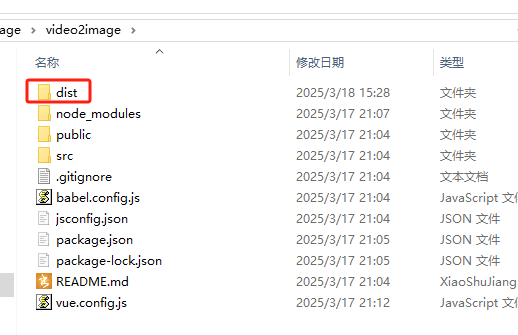
放到插件code目录
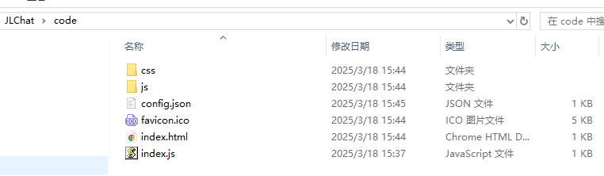
再次打包 重新打包后的
*.guiplugin插件包，就可以在插件管理中使用了。 注意：这里记得需要把index.js改回来，不然打包后会找不到入口文件。
其他高级配置
要发布成可以在设计界面时能点击的插件，那么还需要额外在插件开发配置配置对应的界面显示和激活事件。 如下图，配置激活事件event.active,随便写个事件名称，保证不重复即可。
菜单项的标题视频转图片工具,图标icon_image_list。最后重新打包。
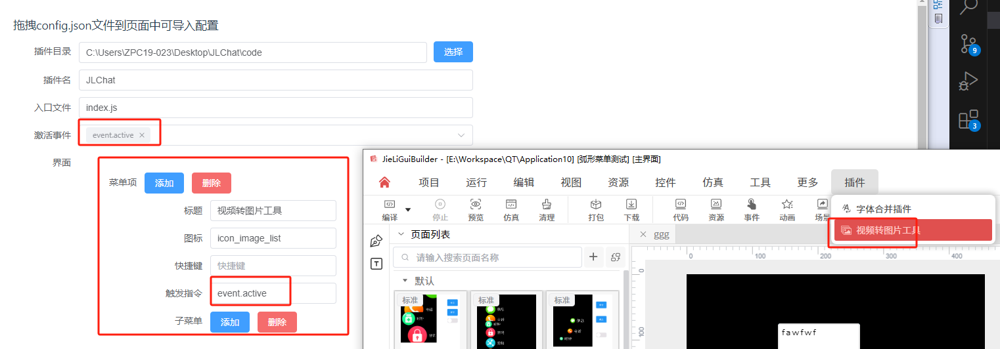
杰理公司内部人员，将生成后的*.guiplugin插件发布到市场，供所有人使用。插件发布后效果
登录工具后，可以在市场上进行下载
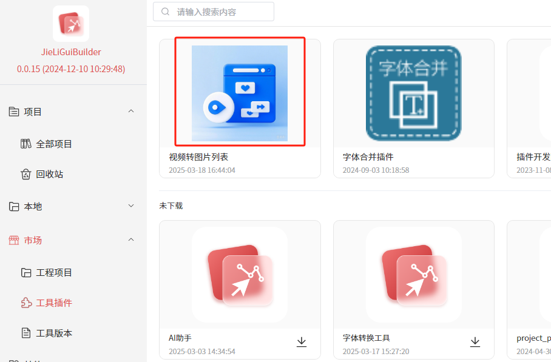
插件模板源码
下面是完整的视频转图片列表工具源码，可以下载使用。 编译后，放到插件的code目录下，重新打包即可。